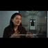

<!DOCTYPE html>
<html lang="en">
 <head>
<!-- Favicon -->
<link rel="shortcut icon" href="../../favicon.ico">
  <meta charset="utf-8"/>
  <title>
   Spirit Cooking Marina Abramovic Diticated to Saint Therese (because she was angry at Divne force)
  </title>
  <meta content="Post on /v/Pizzagate archived on 2016-11-29 by UtherPendragan." name="description"/>
  <meta content="Spirit Cooking Marina Abramovic Diticated to Saint Therese (because she was angry at Divne force)" property="og:title"/>
  <meta content="Post on /v/Pizzagate archived on 2016-11-29 by UtherPendragan." property="og:description"/>
  <link href="../../static/css/page.css" rel="stylesheet"/>
  <meta content="https://voat.pizzagate.hackliberty.org/thumbnails/80/b3/80b3dcad-c310-422a-8533-efd077a32042.jpg" property="og:image"/>
  <meta content="https://voat.pizzagate.hackliberty.org/v/pizzagate/1445625.html" property="og:url"/>
  <meta content="width=device-width, initial-scale=1" name="viewport"/>
  <link href="https://voat.pizzagate.hackliberty.org/1445625.html" rel="canonical"/>
  <meta content="article" property="og:type"/>
  <meta content="Voat /v/Pizzagate Archive" property="og:site_name"/>
  <meta content="en_US" property="og:locale"/>
  <meta content="summary_large_image" name="twitter:card"/>
  <meta content="Spirit Cooking Marina Abramovic Diticated to Saint Therese (because she was angry at Divne force)" name="twitter:title"/>
  <meta content="Post on /v/Pizzagate archived on 2016-11-29 by UtherPendragan." name="twitter:description"/>
  <meta content="https://voat.pizzagate.hackliberty.org/thumbnails/80/b3/80b3dcad-c310-422a-8533-efd077a32042.jpg" name="twitter:image"/>
 </head>
</html>
<body class="dark">
 <div id="container">
  <!-- array (
  'submissionid' => 1445625,
  'creationDate' => '2016-11-29 08:29:33',
  'domain' => 'youtube.com',
  'formattedContent' => NULL,
  'isAdult' => 0,
  'isAnonymized' => 0,
  'subverse' => 'pizzagate',
  'thumbnail' => '80b3dcad-c310-422a-8533-efd077a32042.jpg',
  'title' => 'Spirit Cooking Marina Abramovic Diticated to Saint Therese (because she was angry at Divne force)',
  'url' => 'https://www.youtube.com/watch?v=37GtB4hMINY',
  'userName' => 'UtherPendragan',
  'archivedLink' => NULL,
  'archivedDomain' => NULL,
  'isDeleted' => 0,
) -->
  <div style="text-align:center; font-size:24px; font-weight:bold;">
   <a href="../../index.html" style="text-decoration: none; color: inherit;">
    Voat /v/Pizzagate Archive
   </a>
  </div>
  <div class="content" role="main">
   <div class="sitetable linklisting" id="siteTable">
    <div class="submission id-1445625 link type-text" id="submission-1445625">
     <a name="submissionTop">
     </a>
     <p class="parent">
     </p>
     <a class="thumbnail may-blank" href="https://www.youtube.com/watch?v=37GtB4hMINY" target="_self">
      
     </a>
     <div class="entry unvoted">
      <p class="title">
       <a class="title may-blank" href="https://www.youtube.com/watch?v=37GtB4hMINY" tabindex="1" target="_self" title="Spirit Cooking Marina Abramovic Diticated to Saint Therese (because she was angry at Divne force)">
        Spirit Cooking Marina Abramovic Diticated to Saint Therese (because she was angry at Divne force)
       </a>
       <span class="domain">
        (
        <a href="https://archive.searchvoat.co/search.php?d=youtube.com">
         youtube.com
        </a>
        )
       </span>
      </p>
      <p class="tagline">
       submitted
       <time datetime="2016-11-29T08:29:33+00:00" title="11/29/2016 8:29:33 AM">
        2016-11-29T08:29:33
       </time>
       by
       <span class="userattrs">
        <a class="author may-blank" href="https://archive.searchvoat.co/search.php?u=UtherPendragan">
         UtherPendragan
        </a>
       </span>
      </p>
      <ul class="flat-list buttons">
       <li class="first">
        <a class="comments may-blank" href="https://archive.searchvoat.co/v/pizzagate/1445625" rel="nofollow">
         1 comment
        </a>
       </li>
      </ul>
     </div>
     <div class="child">
     </div>
     <div class="clearleft">
     </div>
    </div>
    <div class="clearleft">
    </div>
   </div>
   <div class="horizontal-line">
   </div>
   <div class="commentarea">
    <div class="sitetable nestedlisting" id="siteTable">
     <div class="child id-6982478 comment even" style="">
      <div class="entry unvoted">
       <div class="noncollapsed" id="6982478" style=";">
        <p class="tagline">
         <a class="author may-blank" href="https://archive.searchvoat.co/search.php?u=PolybiusPizza">
          PolybiusPizza
         </a>
         <span class="userattrs">
         </span>
         <time datetime="2016-11-29T12:02:36+00:00" title="11/29/2016 12:02:36 PM">
          2016-11-29T12:02:36
         </time>
        </p>
        <div class="usertext-body may-blank-within" id="commentContent-6982478">
         <div class="md">
          <p>
           <p>
            She said it herself, it was easy to take those pictures, but then goes on to cover about how you need to get everythingnjust right. Yeah right! This is the reason she does this stuff. It is easy and it makes her money she just has to hold a random skull and look angsty. She has zero stories about her grandma, just rambles about kitchens and how she feels connected to them, and how she liked it and found it funny when St. Teresa got mad at God, which I am sure she is misinterpretting. I will go find the Mother Teresa quote or something. This is my first time seeing Marina in a video, and I have to say, she is an excellent BS artist.
           </p>
           <p>
            edit: Wow, turns out Mother Teresa had her doubts pretty much her whole life. I wonder why. If I had floated while my soup burned I guess I would be confused too.
           </p>
          </p>
         </div>
        </div>
        <ul class="flat-list buttons">
         <li class="first">
          <a class="bylink" href="https://archive.searchvoat.co/v/pizzagate/1445625/6982478" rel="nofollow">
           link
          </a>
         </li>
        </ul>
       </div>
      </div>
     </div>
    </div>
   </div>
  </div>
 </div>
<!-- Footer Section -->
<footer class="container-fluid mt-3">
  <p class="small mb-0">
    /v/pizzagate archive has 40446 posts and 683312 total comments.
    <a href="https://git.hackliberty.org/c0mmando/voat-pizzagate-archive/">source code</a>.
  </p>
</footer>

<script src="../../static/js/jquery-3.7.1.slim.min.js"></script>
<script src="../../static/js/comments-toggle.js"></script>

</body>
